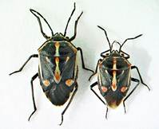
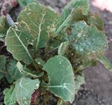

| Home |
| MUSTARD |
| 1. Mustard aphid |
| 2. painted bug |
| 3. mustard sawfly |
| 4. green peach aphid |
| 5. pea leaf-Miner |
| 6. Bihar hairy caterpiller |
| 7. Cabbage butterfly |
| 8. diamondback moth |
| questions |
| Download Notes |
PESTS OF MUSTARD (Brassica) :: Major Pests :: Painted Bug
2. Painted Bug: Bagrada hilaris (Pentatomidae: Hemiptera)
Distribution and status: Widely distributed in Myanmar, Sri Lanka, India, Arabia and East Africa.
Host range: Crucifers, rice, sugarcane, indigo and coffee
Bionomics: The full-grown black nymphs are about 4 mm long and 2.66 mm broad. Sub-ovate, black adult bugs are 3.71 mm long and 3.33 mm broad with a number of orange or brownish spots. It is active from March to December and during this period all the stages can be seen. It passes the winter months of January and February in the adult stage under heaps of dried oilseed plants lying in the fields. These bugs lay oval, pale-yellow eggs singly or in groups of 3-8 on leaves, stalks, pods and sometimes on the soil. Eggs may be laid during day or night. A female bug may lay 37-102 eggs in its life-span of 3-4 weeks. Egg period is 3-5 days during summer and 20 days during December. There are five nymphal instars with a duration of 22 -34 days. The entire life cycle is completed in 19-54 days and it passes through 9 generations in a year.
 |
Damage symptoms: Both nymphs and adults suck cell sap from the leaves and developing pods, which gradually wilt and dry up. The nymphs and adult bugs also excrete a sort of resinous material which spoils the pods.
 |
Management
- Give first irrigation 3-4 weeks after sowing as it reduces the bug population significantly. (ii) Spray 1.0 L of malathion 50 EC or 625 ml of endosulfan 35 EC or quinalphos 25 EC in 500-600 L of water per ha once in October and again in March-April.
- Conserve egg parasitoid Gryon sp. (Scelionidae) and the adult parasitoid Alophora sp. (Tachinidae).